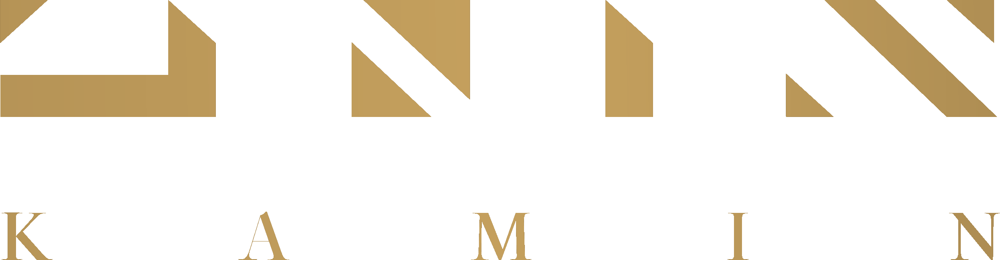

{{ t.nav.home }}
{{ t.nav.services }}
{{ t.nav.about }}
{{ t.nav.process }}
{{ t.nav.contact }}
{{ t.nav.langBtn }}
{{ t.nav.cta }}
{{ t.nav.menuBtn }}
{{ t.nav.home }}
{{ t.nav.services }}
{{ t.nav.about }}
{{ t.nav.process }}
{{ t.nav.contact }}
{{ t.nav.cta }}
{{ t.home.eyebrow }}
{{ t.home.heroTitleA }}
{{ t.home.heroKicker }}
{{ t.home.heroSubA }}
{{ home.arabicLine }}
{{ t.home.heroCta }}
{{ t.home.heroCta2 }}
{{ t.home.standardEyebrow }}
{{ t.home.standardTitle }}
{{ t.home.standardBody }}
{{ t.home.pillarsEyebrow }}
{{ t.home.pillarsTitle }}
{{ t.home.pillarsSub }}
{{ pillar.name }}
{{ pillar.body }}
{{ t.home.servicesEyebrow }}
{{ t.home.servicesTitle }}
{{ t.home.servicesLink }}
{{ svc.name }}
{{ svc.desc }}
{{ home.clientCount }}+
{{ t.home.statsLabel }}
{{ t.about.mapTitle }}
{{ t.about.mapBody }}
{{ city }}
{{ t.home.sectorsLabel }}
{{ sector }}
{{ sector }}
{{ t.home.practiceEyebrow }}
{{ t.home.practiceTitle }}
{{ step.num }}
{{ step.name }}
{{ step.body }}
{{ t.home.kaminStandardEyebrow }}
{{ t.home.kaminStandardTitle }}
{{ t.home.kaminStandardBody }}
{{ t.home.guaranteeLabel }}
+
{{ item }}
{{ t.home.compareEyebrow }}
{{ t.home.compareTitle }}
{{ t.home.compareSub }}
{{ compare.cols.kamin }}
{{ compare.cols.diy }}
{{ compare.cols.freelance }}
{{ compare.cols.online }}
{{ compare.cols.recruiter }}
{{ row.label }}
{{ t.home.compareLegendYes }}
{{ t.home.compareLegendPartly }}
{{ t.home.compareLegendNo }}
{{ t.home.compareNote }}
{{ t.home.miskEyebrow }}
{{ t.home.miskTitle }}
{{ t.home.miskBody }}
{{ t.home.testimonialsEyebrow }}
{{ t.home.testimonialsTitle }}
{{ t.home.f4Quote }}
GA
{{ t.home.f4Name }}
{{ t.home.f4Role }}
{{ t.home.f5Quote }}
TO
{{ t.home.f5Name }}
{{ t.home.f5Role }}
{{ t.home.f6Quote }}
MA
{{ t.home.f6Name }}
{{ t.home.f6Role }}
{{ t.home.f7Quote }}
FB
{{ t.home.f7Name }}
{{ t.home.f7Role }}
{{ t.home.f8Quote }}
KA
{{ t.home.f8Name }}
{{ t.home.f8Role }}
{{ t.home.f9Quote }}
MM
{{ t.home.f9Name }}
{{ t.home.f9Role }}
{{ quote.quote }}
{{ quote.role }}
{{ quote2.quote }}
{{ quote2.role }}
{{ t.home.founderEyebrow }}
{{ t.home.founderBody }}
{{ t.home.founderName }}
{{ t.home.founderAttribution }}
{{ t.home.fitLine }}
{{ t.home.ctaBannerTitle }}
{{ t.home.ctaBannerBody }}
{{ t.home.ctaBannerBtn }}
{{ t.services.eyebrow }}
{{ t.services.title }}
{{ t.services.sub }}
{{ cat.title }}
{{ cat.note }}
{{ item.name }}
{{ item.name }}
{{ item.sub }}
{{ item.price }}
{{ t.services.ctaTitle }}
{{ t.nav.cta }}
{{ t.nav.contact }}
{{ t.about.poemLabel }}
{{ about.poemAr }}
{{ t.about.poemTranslation }}
{{ t.about.heroTitle }}
{{ t.about.storyP1 }}
{{ t.about.storyP2 }}
{{ t.about.storyP3 }}
{{ t.about.visionLabel }}
{{ t.about.visionBody }}
{{ t.about.missionLabel }}
{{ t.about.missionBody }}
{{ t.about.valuesLabel }}
{{ val.name }}
{{ val.body }}
{{ t.team.eyebrow }}
{{ t.team.title }}
{{ t.team.lede }}
{{ tm.name }}
{{ tm.years }}
{{ tm.role }}
{{ tm.lead }}
{{ tm.body }}
{{ tm.credentials }}
{{ t.about.trustedLabel }}
{{ t.about.trustedBody }}
{{ logo }}
{{ logo2 }}
{{ t.contact.eyebrow }}
{{ t.contact.title }}
{{ t.contact.sub }}
{{ t.contact.formName }}
{{ t.contact.errorName }}
{{ t.contact.formEmail }}
{{ t.contact.errorEmail }}
{{ t.contact.formPhone }}
{{ t.contact.formReason }}
{{ opt }}
{{ t.contact.formMessage }}
{{ t.contact.errorMessage }}
{{ submitLabel }}
{{ contact.statusText }}
{{ t.contact.emailLabel }}
{{ t.contact.emailValue }}
{{ t.contact.phoneLabel }}
{{ t.contact.phoneValue }}
{{ t.contact.locationLabel }}
{{ t.contact.locationValue }}
{{ t.contact.socialLabel }}
{{ t.team.eyebrow }}
{{ t.team.title }}
{{ t.team.lede }}
{{ m.name }}
{{ m.years }}
{{ m.role }}
{{ m.lead }}
{{ m.body }}
{{ m.credentials }}
{{ t.services.ctaTitle }}
{{ t.nav.cta }}
{{ t.faq.eyebrow }}
{{ t.faq.title }}
{{ t.faq.lede }}
{{ item.q }}
{{ item.sign }}
{{ item.a }}
{{ t.services.ctaTitle }}
{{ t.nav.cta }}
{{ t.process.eyebrow }}
{{ t.process.title }}
{{ t.process.lede }}
{{ t.process.startTitle }}
{{ t.process.startSub }}
{{ track.name }}
{{ track.desc }}
{{ track.num }}
{{ track.unit }}
{{ t.process.startNote }}
{{ t.process.seqTitle }}
{{ t.process.seqSub }}
{{ step.n }}
{{ step.name }}
{{ t.process.seqNote }}
{{ t.process.reviewTitle }}
{{ t.process.reviewSub }}
{{ step.title }}
{{ step.tag }}
{{ step.body }}
{{ t.process.reviewNote }}
{{ t.process.revTitle }}
{{ t.process.revSub }}
{{ card.n }}
{{ card.name }}
{{ card.body }}
{{ block.title }}
{{ block.body }}
{{ t.process.signoffQ }}
{{ t.process.signoffBody }}
{{ t.nav.cta }}
{{ t.nav.contact }}
{{ t.terms.eyebrow }}
{{ t.terms.title }}
{{ section.heading }}
–
{{ item }}
{{ t.terms.confidentialityTitle }}
{{ t.terms.confidentialityBody }}
{{ home.arabicLine }}
{{ t.footer.tagline }}
{{ t.footer.siteLabel }}
{{ t.nav.home }}
{{ t.nav.services }}
{{ t.nav.about }}
{{ t.footer.teamLabel }}
{{ t.footer.processLabel }}
{{ t.footer.faqLabel }}
{{ t.footer.termsLabel }}
{{ t.footer.privacyLabel }}
{{ t.nav.contact }}
{{ t.footer.connectLabel }}
{{ t.contact.emailValue }}
{{ t.footer.copyright }}